1과목: 조경사
1. 중국 송(宋)나라 때의 유학자인 주돈이와 관련이 있는 것들로만 짝지어진 것은?
2. 다음 중 백제의 정원 관련 서적과 관계없는 것은?
3. 중국정원에서 원자(院子)에 관한 설명으로 가장 적당한 것은?
4. 일본의 임천회유식정원으로 중국적인 조경요소인 원월교(圓月橋), 소여산(小廬山) 그리고 서호제(西湖堤)가 만들어져 있는 곳은?
5. 국민의 기질이 그 나라에 독특한 정원을 만든다고 한다면, 국가와 그 나라의 외부공간 특징이 잘못 연결된 것은?
6. 전통 정원에서 음양오행과 주역사상에 의한 장식을 외부 공간에 많이 사용하였는데 화마를 제압하는 능력의 벽사장식으로 생각할 수 있는 것은?
7. 비큰히드 파크(Birkenhead Park)에 대한 설명 중 틀린 것은?
8. 조선시대에 가장 흔히 조성된 연못의 형태는?
9. 다음은 정원이 완성된 시대, 위치, 정원, 그 특징을 나타낸 것이다. 이 중 서로 맞지 않는 것은?
10. 고대 서부아시아 수렵원(Hunting Park)에 대한 내용과 관계가 없는 것은?
11. 이탈리아의 미켈란젤로에 의해 조성된 Piazza Campidoglio 광장이 바로크 양식의 시작이라고 하는데 바로크 양식의 특징과 거리가 먼 것은?
12. 조선시대 선비들은 동쪽 울타리 아래에 국화를 심었고, 후원에 무릉도원을 조성했으며 문전에 오류(五柳)를 심었다. 이는 누구의 영향을 받았다고 볼 수 있는가?
13. 중국 원명원에 대한 견문기를 써서 친구에게 보낸 편지가 1752년 런던에서 발간된 바 있는데 이것은 원명원을 복원하는데 매우 중요한 자료가 되었다. 이 편지를 쓴 사람은?
14. 창덕궁 후원의 반도지에 있는 관람정은 부채꼴 모양의 정자이다. 이와 같은 유형의 정자는 중국의 어느 정원에서 찾을 수 있는가?
15. 이탈리아 르네상스 정원의 특징으로 가장 부적합한 것은?
16. 중세에 시작된 무늬화단 조성 기법으로 키 작은 상록수로 매듭무늬를 그려놓는 수법은?
17. 정원 중 조성 연대순으로 올바르게 나열된 것은? (단, 조영시기가 오래된 것부터 나열한다.)
18. 중국정원을 소개하고, 큐 가든(Kew Garden)을 설계한 사람은?
19. 영국에서 일반 대중을 위한 최초의 공원을 설계한 사람은?
20. 창덕궁 궁궐의 원림 속에 있으며, 옥류천의 북쪽에 자리 잡고 있는 삿갓 지붕형의 단칸, 모정(矛亭)으로 방지방도로 된 유일한 것은?
2과목: 조경계획
21. 우리나라 국립공원 중 최초로 지정된 곳은?
22. 어린이놀이터는 어린이의 이용에 편리하고 일조가 양호한 곳에 배수에 지장이 없도록 설치하되 그 1개소의 면적은 몇 제곱미터 이상이어야 하는가? (단, 주택건설기준등에 관한 규정을 적용하고, 시·군지역은 제외한다.)
23. 건축법시행령상 단독주택은 단독주택, 다중주택, 다가구주택 등으로 구분하는데 그 중 “다중주택”이 갖추어야 할 조건에 해당하지 않는 것은?
24. 주택정원의 전정(前庭)에 관한 다음 설명 중 옳지 않은 것은?
25. 장래를 예측하는 것은 조경계획에서 매우 중요한 업무인데 장래 예측방법 중 특히 각 분야의 첨단을 달리는 전문가들의 의견을 종합하고 이들의 장래에 대한 예측 분석에 입각해서 예측하는 장래 예측방법은?
26. 근린주구(neighborhood unit)의 개념을 최초로 이론적으로 정립한 사람은?
27. 다음에 열거한 계획 개념어 중 Ian McHarg의 생태학적 결정론과 가장 가까운 것은?
28. 공장조경의 근본목적에 알맞지 않는 것은?
29. 다음 도시공원 중 관련 법상 설치할 수 있는 공원시설 부지면적의 비율이 공원 면적에 대하여 가장 높은 곳은?
30. 린드블롬(Lindblom)이 주장한 점진적 계획의 특징에 대한 설명 중 옳은 것은?
31. 국토의 계획 및 이용에 관한 법률 시행령상 도시관리계획 결정이 고시된 경우, 시장 또는 군수가 지적이 표시된 지형도에 도시관리계획 사항을 명시한 도면을 작성하는 기준 축척은? (단, 녹지지역안의 임야, 관리지역, 농림지역 및 자연 환경보전지역의 경우는 고려하지 않음.)
32. 자연공원법상 공원구역에서 공원사업 외의 행위로 공원 관리청의 허가를 받아야 하는 경우에 해당하지 않는 것은?
33. 개발계획 규모별 도시공원 또는 녹지의 확보기준으로 틀린 것은?
34. 다음 중 조경계획 진행시 인문·사회·환경 조사 항목이 아닌 것은?
35. 사전환경성검토의 환경영향 검토 항목에 해당하지 않는 것은?
36. 비교적 큰 규모의 프로젝트(예: 유원지, 국립공원)를 수행할 때 기본구상의 단계에서 가장 중요한 항목은?
37. 토양상(soil individual)을 나타내는 방법을 예시하면 SoC2로 표현할 수 있는데 여기서 So, C, 2가 의미하는 바를 바르게 짝지은 것은?
38. 어떤 프로젝트가 시공되고 얼마동안의 이용기간을 거친 후 그 설계 혹은 계획에 대한 평가를 함으로써 설계 의도가 그대로 반영되고 있는지, 이용자의 행태에 적합한 공간 구성이 이루어졌는지 등을 알아보고자 하는 평가는?
39. 도시민의 일상생활에서 필요한 산소(O2)의 공급원으로서 요구되는 수림지 면적을 산출하여 공원녹지의 수요를 결정하는 방법은?
40. 다음 설명의 ( )안에 적합한 것은?(단, 기본적인 원칙 이외의 예외 규정은 제외한다.)
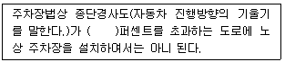
3과목: 조경설계
41. 고속도로 가용지 상정시 피해야 할 지역으로 거리가 먼 것은?
42. 직고(直高) 3m의 절토면에 석축 설계시 메쌓기 공법으로 시공하면 기울기는 최대 얼마인가?
43. 도시경관에서는 인체의 오관(五官) 중 시각적인 자각이 가장 큰 비중을 차지한다. 일반적으로 시각 다음으로 큰 비중을 차지하는 감각은?
44. 때로는 따뜻하게, 때로는 차갑게 느껴지는 중성색이 아닌 것은?
45. Litton의 시각회랑에 의한 경관평가에서 경관의 우세 요소에 속하지 않는 것은?
46. 콘크리트 포장의 주차장을 설계할 때 고려할 사항 중 적합하지 않은 것은?
47. 빨간색 물감과 녹색 물감을 혼색했을 때 나타나는 현상이 아닌것은?
48. (보기)의 입체도에서 화살표 방향의 투상도로 가장 적합한 것은?
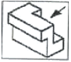
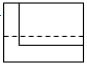
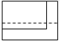
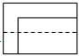
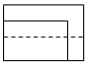
49. 다음 중 소형자동차 제원에 적합한 최소 회전 반지름은? (단, 제원의 단위는 m이고, 도로의 구조 시설 기준에 관한 규칙을 적용한다.)
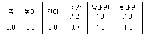
50. 식물의 텍스처(texture)에 대한 경관적 특성 및 이용 방안에 관한 설명 중 잘못된 것은?
51. 다음 중 설계과정 순서로 옳은 것은?
52. Munsell system에서 색의 3속성을 표현하는 기호의 순서로 맞는 것은?(단, 채도(C), 명도(V), 색상(H)으로 표현한다.)
53. 1점 쇄선의 용도가 아닌 것은?(단, KS F 1501을 기준으로 한다.)
54. 옥외 공원등 설치시 시설기준으로 옳지 않은 것은? (문제 오류로 실제 시험에서는 모두 정답처리 되었습니다. 여기서는 1번을 누르면 정답 처리 됩니다.)
55. K.Lynch가 주장한 도시경관의 시각적 명료성을 분석하기 위한 5가지 요소에 해당하지 않는 것은?
56. 다음 중 쓰레기통의 설치 장소를 결정하는 것과 가장 관계가 적은 것은?
57. 빨간색과 파란색을 섞으면 어떤 색으로 보이는가? (문제 오류로 실제 시험에서는 모두 정답처리 되었습니다. 여기서는 1번을 누르면 정답 처리 됩니다.)
58. 유리병 속의 액체나 얼음덩어리처럼 공간의 투명한 부피를 느끼게 하는 색은?
59. 양팔을 곧게 편상태로 파악할 수 있는 최대 영역을 무엇이라 하는가?
60. 다음 중 버라인(Berlyne)이 주장한 인간의 미적반응 과정을 바르게 연결시킨 것은?
4과목: 조경식재
61. 우리나라에서 난지형 잔디의 파종 시기와 온도가 가장 적합한 것은?
62. 기수1회 우상복엽의 잎 특성을 가진 수종이 아닌 것은?
63. 다음 중 우리나라에서 이용되는 갯잔디의 학명은?
64. 다음 중 비늘줄기(鱗莖,bulb)인 것은?
65. 다음 ( )안에 적합한 용어는?
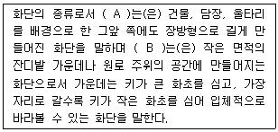
66. 다음 중 접목의 장점이 아닌 것은?
67. 흰색 계열의 작은 꽃은 5 ~ 6월에 피고 가을에 붉은 계통의 단풍잎 또한 관상가치가 있으며, 음지사면에 식재하면 좋은 수종은?
68. 봄에 노란색의 꽃이 피는 수종이 아닌 것은?
69. 식재 계획시 일반적인 원리로 옳은 것은?
70. 다음 중 수도(數度, abundant)를 나타내는 식으로 맞는 것은?
71. 다음 중 관목을 이식할 때 다른 요소들 보다 중요하게 고려하지 않아도 되는 것은?
72. 조경수의 특성과 질감을 고려한 배식에서 안쪽으로 깊숙한 느낌을 주는 배식의 설명이 잘못된 것은?
73. 다음 중 장미과의 수종이 아닌 것은?
74. 토양은 무기물, 유기물, 토양공기, 토양수분 등 4요소로 구성되었다. 다음 중 조경식물 생육에 가장 이상적인 용적 비율은?
75. 아래 그림은 차폐식재(遮蔽植栽)에 있어서 차폐대상과 차폐를 위해 식재해야 할 나무의 크기와의 관계를 나타낸 것이다. 여기에 있어서 식재해야 할 나무의 크기 h를 구하는 공식은?
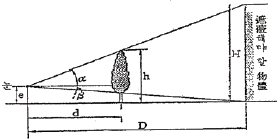
76. 다음 Salix pseudolasiogyne H.Lev.의 특성 설명으로 틀린 것은?
77. 다음 중 개화기가 가장 늦은 수종은?
78. 다음 중 잎의 질감(質感)이라는 관점에서 볼 때 상이한 질감을 갖는 것은?
79. 다음 생태와 관련한 설명 중 부적당한 것은?
80. 다음 중 강산성(pH 3.8~5.4) 토양에서 자랄 수 있는 수목으로만 짝지어진 것은?
5과목: 조경시공구조학
81. 자동차의 주행에 영향을 미치는 도로의 기하구조와 물리적 형상을 결정하는데 사용되는 자동차의 속도는?
82. 다음배수계획에 관한 설명 중 옳은 것은?
83. 벽돌공사의 적산에 관한 다음 사항 중 맞지 않는 것은?
84. 사질 및 점토층에 관한 설명 중 옳지 않은 것은?
85. TQC를 위한 7가지 도구 중 다음 설명에 해당하는 것은?
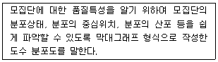
86. 지형도에서 등고선이 높아질수록 밀집하여 있으며, 반대로 낮은 등고선에서는 간격이 멀어져 있는 경우는 다음 중 어느 것이 가장 적당한가?
87. 한국산업표준(KS)에 규정되어 있는 배관용 스테인레스 강관의 종류는?
88. 도로설계시에 교각(交角)이 30° 이고, 곡선반경이 40m를 그리는 수평 도선에서 교각에 의한 단곡선의 곡선장은 약 얼마인가?
89. A점의 지반고가 150.60 m 일 때 B 점의 표고로 가장 적당한 것은?(단, A점의 기계고는 1.46m, AB의 수평거리는 125m이다.)
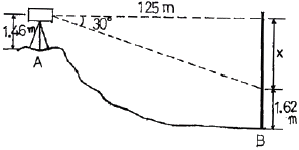
90. 그림과 같은 직사각형 단면의 하단축인 X축에 대한 단면 2차 모멘트 Iχ는?
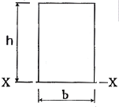
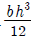
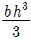
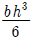
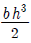
91. 굳지 않은 콘크리트의 성질에 관한 내용으로 옳지 않은 것은?
92. 잔디떼 규격이 30cm × 30cm인 잔디를 평떼로 15m2를 식재하고자 한다. 총 몇 장이 소요되는가?
93. 다음의 목재 중 압축강도(kgf/cm2)가 가장 강한 것은?
94. 차도를 통행의 방향에 따라 분리하고 옆 부분의 여유를 확보하기 위하여 도로의 중앙에 설치하는 중앙분리대를 설치할 수 있는 차도의 최소 폭은?
95. 다음 중 시방서에 포함될 수 없는 것은?
96. 다음 조경에서 이용되는 분무살수기(spray head)에 관한 설명중 틀린 것은?
97. 다음 중 옹벽의 안정조건이 아닌 것은?
98. 다음 중 열경화성수지에 속하지 않는 것은?
99. 토양수분의 포화상태에 대한 투수현상은 Darcy의 법칙을 이요 하여 설명할 수 있는데 다음 중 잘못된 것은?
100. 그림과 같은 단순보에서 B점의 수직반력은?
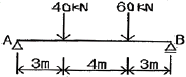
6과목: 조경관리론
101. 경제적 가해 수준(Economic injury level)이란?
102. 주민 참가에 의한 공원관리 활동 내용으로 적합하지 않은 것은?
103. 아스팔트 및 골재가 떨어져 나가는 현상으로 아스팔트의 부족과 혼합물의 과열, 혼합불량 등 표층 자체의 품질 불량이 주요 원인이 되는 것은?
104. 조경시설물의 운영관리방법은 직영방식과 도급방식이 있는데, 다음 중 도급방식의 특징인 것은?
1⑤. 대추나무 빗자루병의 방제에 쓰이는 약제는?
106. 병원균 중에서 불완전균류에 의해 병포자(炳胞子)를 형성하는 것은?
107. 낙엽송 가지끝마름병균(선고병)의 월동 형태는?
108. 30%메프(Mep) 유제(비중 1.0) 200cc를 0.06%의 살포액으로 만드는데 소요되는 물의 양(cc)은?
109. 소나무 재선충병에 대한 설명으로 옳지 않은 것은?
110. 다음 중 1년 2회 발생하고, 번데기로 월동하는 해충은?
111. 한국잔디가 관리면에서 좋은 점에 해당하지 않는 것은?
112. 옥외 조명 재료 중 등주재료의 특징에 대한 설명으로 부적합한 것은?
113. 시설물 이용조사의 항목과 거리가 먼 것은?
114. 식물체 내에서는 극히 부동성이며 세포막을 강건하게 하고 단백질의 합성, 질소의 흡수 및 이용조장, 체내의 독극물질 중화, 분열조직의 생장과 뿌리털의 발육에 필수적인 성분은?
115. N : P2O5 : K2O의 비가 5 : 3 : 2 인 배합비료 300kg을 황산 암모늄(N 20.0%), 과인산석회(P2O5 16.0%), 황산칼륨(K2O 48.0%)을 원료로 제조할 경우 원료 비료의 양으로 가장 적합한 것은?
116. 시공계획 결정에 있어서 검토하지 않아도 될 사항은?
117. 저항성 잡초의 출현에 가장 큰 원인이 되는 것은?
118. 수목의 시비방법에 관한 설명으로 부적합한 것은?
119. 안전관리대책에 있어 사고방지 대책에 해당하지 않는 것은?
120. 파이토플라스마(Phytoplasma)에 의한 수목병 중 마름무늬 매미충에 의해 매개되는 병은?